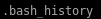
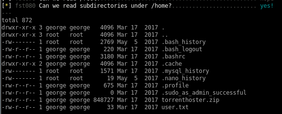

{kind=link}
.html){kind=link}
.html){kind=link}
.html){kind=link}
--edit_this_torrent-change_screenshot.html){kind=link}
--Repeater_simple_php_code_injection.html){kind=link}
--Repeater_simple_php_code_injection--wget_tcp_pty_handler.html){kind=link}
--Repeater_simple_php_code_injection--reverse_shell.html){kind=link}
lse.sh
lse.sh or linux smart enumeration bash script is a personal favorite of mine when it comes to enumerating potential privilege escalation vulnerabilites in linux boxes, lets see what it reports back to us about this box,I'll list everything that is interesting but will eventually follow ippsec's priv esc method in the next node
we can check our own box against this one to find SUID binaries that are irregular on this box and search them up on GTFO bins to see if theres a way to take advantage of them to privesc

according to this find there are ways to hijack executable paths that can potentiall call reverse shells back to our attack machine

we can also read a couple files that www-data does not own  comes to mind which may show past commands other users have typed in that may allow us to steal and use to priv esc
